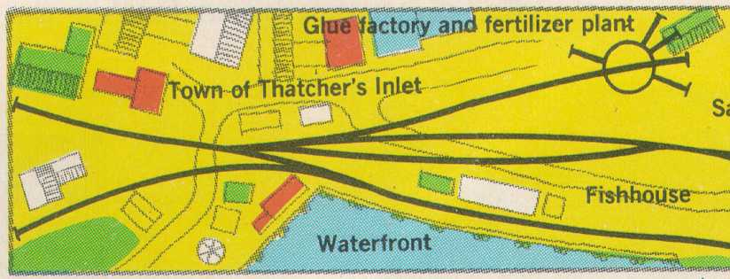

Thatcher's Inlet Project
An idea born of a series in RMC magazine starting with four articles written in 1972 by Bob Hayden and Dave Frary. The challenge is to identify the buildings they used, then capture the spirit of their 6'6" by 3' layout in two 4' by 2' portable HOn30 modules, that will travel to California, by car or airplane.
Someday, someone might say "you know, that reminds me of a layout I saw in an old RMC".
"Sit y'sself down, and git y'sself comfortable, "cause the wust part of this 'sere advenshore is the tellin' of it" - Horace Savage

This was the layout that influenced me to get into HOn 2 1/2 (HOn30).
TI left side
TI right side
The people of Elk River
.
The people of Thatcher's Inlet
FAQ
Alternate TI drawing
Ref Books by Jim
Ref articles by Dave and Bob